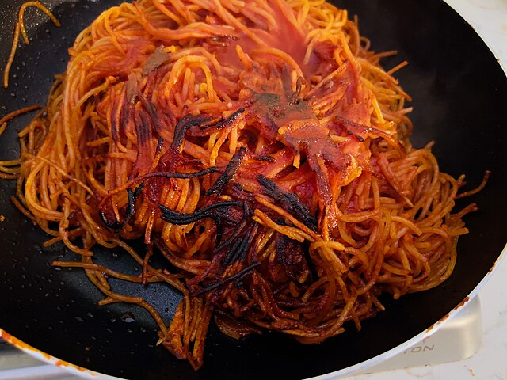

Home
Spaghetti All'Assassina

Don't worry about the burnt parts. This is intentional and a characteristic part of this recipe.
Ingredients
- Spaguetti
- Canned tomatoes
- Tomato paste
- Peperoncino
- Olive oil
- Sliced garlic
Steps
- Bring a large pot of salted water to a boil. Cook the spaghetti according to the package instructions until al dente. Reserve a cup of pasta cooking water, then drain the spaghetti.
- While the spaghetti is cooking, heat a couple of tablespoons of olive oil in a large skillet over medium heat. Add the diced pancetta and cook until it starts to render its fat and become crispy.
- In a separate large skillet, heat a couple of tablespoons of olive oil over medium-high heat.
- Once the oil is hot, add the cooked spaghetti to the skillet in a single layer. Allow it to cook without stirring for a few minutes until it starts to develop a golden-brown crust on the bottom.
- Using tongs or a spatula, carefully flip sections of the spaghetti to evenly toast the other side. Be cautious as the spaghetti may splatter.
- Continue cooking the spaghetti, flipping occasionally, until it is evenly golden and crispy on the outside while still tender on the inside. This step adds a unique texture and flavor to the dish.
- Once the spaghetti is toasted to your liking, proceed with the original recipe by adding it to the skillet with the sauce and tossing to combine.
- Serve the spaghetti all'assassina hot, garnished with grated pecorino romano cheese and chopped fresh parsley.